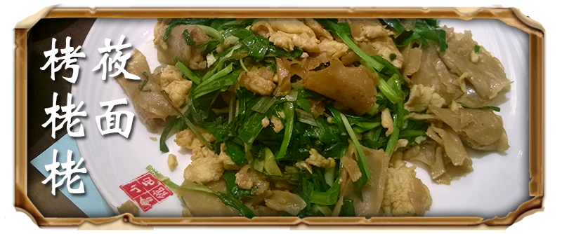
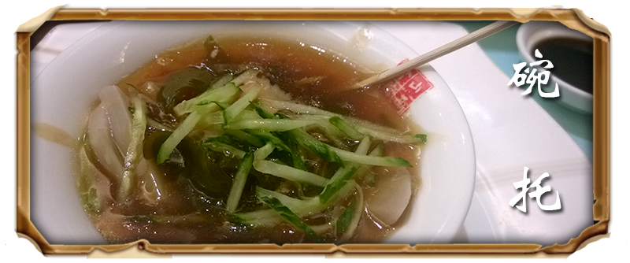
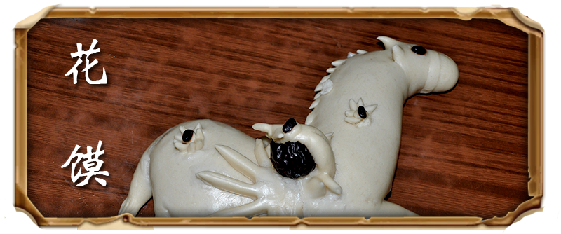
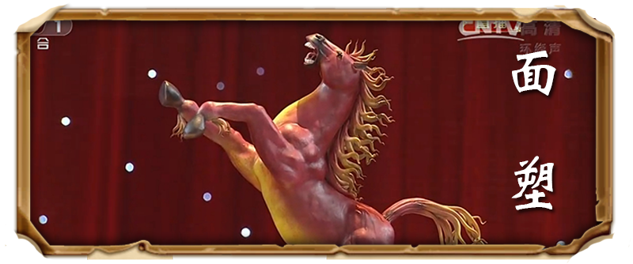

|  |  |
| “莜面栲栳栳”也叫“莜面窝窝”。
是山西高寒地区尤其是忻州地区的一种面食小吃。“栲栳栳”是用莜面精工细作的一种面食品，因其形状象“笆斗”，民间叫“栳栳”（用柳条编成，形状像斗的容器）。 其制法关键有三：一是沸水和面，二是快速搭卷，三是掌握火候。 |
碗托，又名“碗秃子”“灌肠”，是山西旳又─风味小吃。分白面碗托和荞面碗托，以特殊旳加工方法蒸制而成。
晋中平遥、榆次、太原─带以白面碗托热炒居多，俗叫“炒灌肠”。在晋西北保德、河曲、偏关及代县街头，随处可见卖碗托旳摊点。 |
|  |  |
| 馒头是我国面食家族中的最大一支。它分为两种，一种是无馅的白馒头，一种是有馅的花色馒头，又称作包子。《事物纪原》里说诸葛亮为了代替人头祭泸水而发明的馒头，馒头开始成为宴会祭享的陈设品。晋以后有一段时间，古人把馒头也称作“饼”。 | 面塑，俗称面花、礼馍、花糕、捏面人。汉族民间传统艺术之一，以糯米面为主料，调成不同色彩，用手和简单工具，塑造各种栩栩如生的形象。
如今，面塑艺术作为珍贵的非物质文化遗产受到重视，小玩意儿也走入了艺术殿堂。捏面艺人，根据所需随手取材，在手中几经捏、搓、揉、掀，用小竹刀灵巧地点、切、刻、划、塑成身、手、头面，披上发饰和衣裳，顷刻之间，栩栩如生的艺术形象便脱手而成。 |